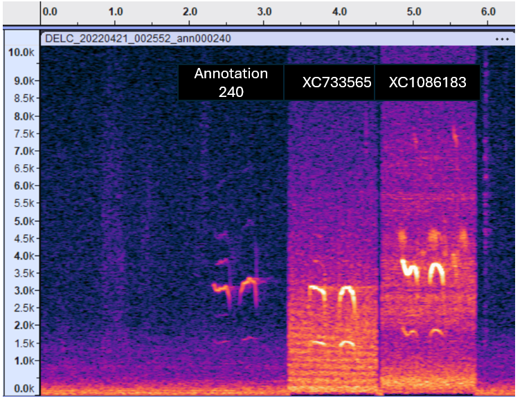
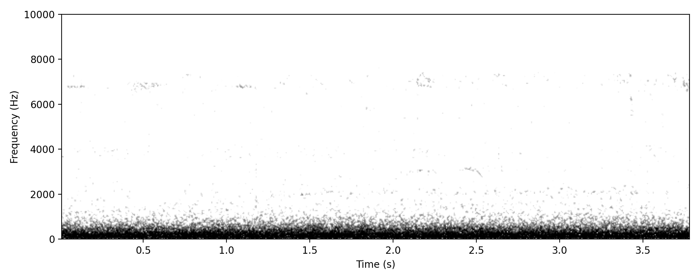
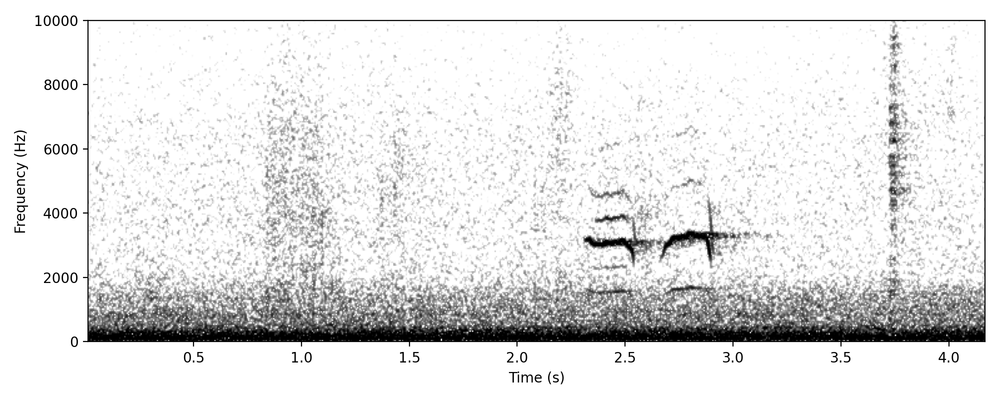
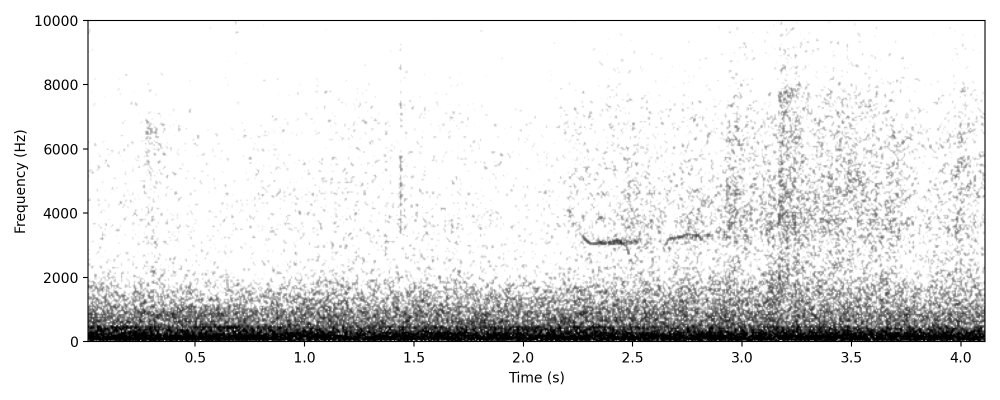

This is not the classic TWO-NOTE WHISTLE described in HANZAB; instead is two whistles of roughly similar length. Still need to work out what name to give to this call. It is the only recognisable Brown Quail vocalisation so far heard in Aus NFC study.

Clear example of the typical NFC of this species. Featured

Very faint example to show how apparently far away these calls can be detected.

Rather faint example.
